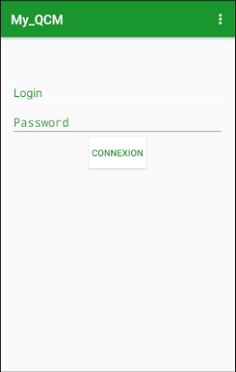

Si vous ne disposez pas d'un compte veuillez-vous diriger vers le chapitre : Nouveau compte.

Pour se connecter il faut :
Vous devriez voir apparaître une fenêtre indiquant "chargement en cours...", une fois terminé vous serez redirigé sur la liste des catégories de QCM.
En cas d'erreur durant la connexion veuillez-vous diriger vers le chapitre : Échec d'authentification
Dans le cadre de la connexion sur un téléphone ayant déjà été utilisé par une autre personne un message apparaîtra pour confirmer la suppression des données de l'utilisateur précédent.
En effet une application n'est utilisable que par un et un seul compte à la fois.
Si vous confirmer la suppression du compte les données comme les résultats qui n'ont pas pu être envoyées seront supprimées.
Créé avec HelpNDoc Personal Edition: Générateur de documentation complet